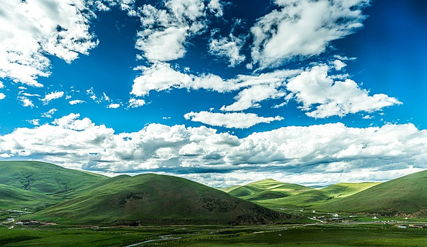

الجبال
الهضاب
السهول
الهضاب
الصحاري
الكهوف
الشكل الأرضي عبارة عن سمة تتشكل بشكل طبيعي على سطح الأرض، وغالبًا ما يكون لها شكل يمكن التعرف عليه مثل الوادي أو الجبل. وهي تتراوح في الحجم ويمكن أن تكون صغيرة مثل التلال أو أكبر بكثير مثل الجبال. إنها ميزات جغرافية موجودة في جميع أنحاء العالم، وتؤثر على النظام البيئي والمناخ والطقس في مكان ما. وليست الأرض فقط هي التي توجد بها هذه الميزات. وفي الواقع، حدد العلماء هياكل مماثلة على كواكب مختلفة بما في ذلك المريخ والزهرة!
تُعرف التضاريس بأنها أشكال سطح الأرض، وتتنوع التضاريس على سطح الأرض من الجبال الشاهقة والهضاب الواسعة إلى السهول الممتدة والوديان العميقة. ويُعد تشكيل التضاريس عملية مستمرة تحدث بفعل مجموعة من العوامل، منها:
تُعرف العوامل الداخلية بأنها القوى التي تحدث داخل الأرض، وتتمثل هذه العوامل في:
تُعرف العوامل الخارجية بأنها القوى التي تحدث على سطح الأرض، وتتمثل هذه العوامل في:
تتفاعل العوامل الداخلية والخارجية مع بعضها البعض لتشكيل التضاريس، فمثلاً، قد يؤدي تحرك صفيحة تكتونية إلى تكوين جبال، ثم تؤدي عوامل التعرية إلى تفتيت هذه الجبال وتشكيل الوديان.
|
الجبال |

الهضاب |
|
السهول |
الهضاب |
|
الصحاري |
الكهوف |
جميع الحقوق محفوظة ©